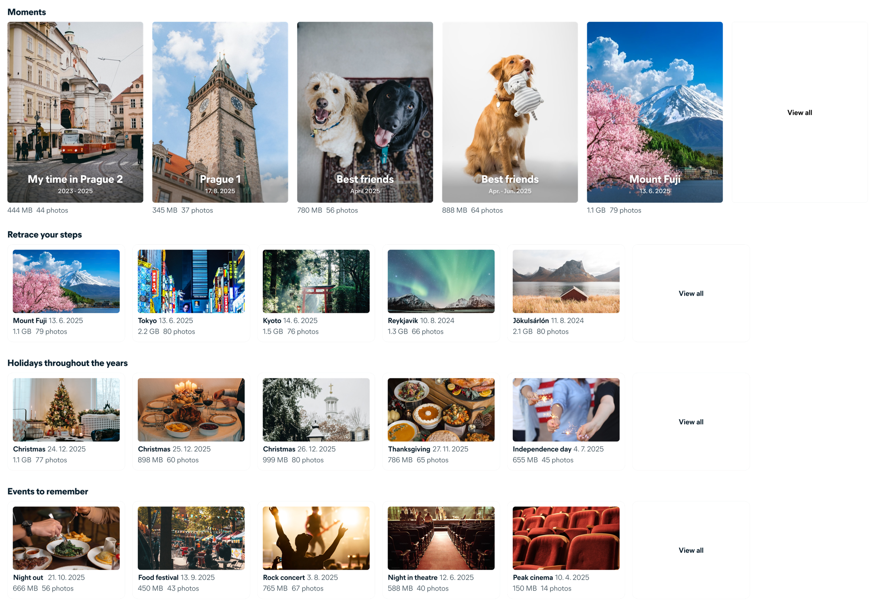
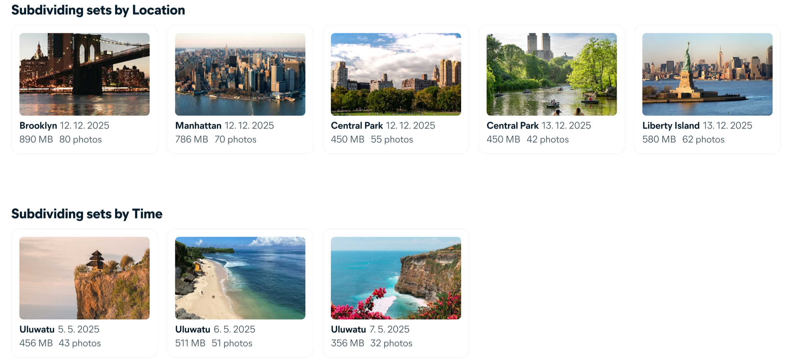
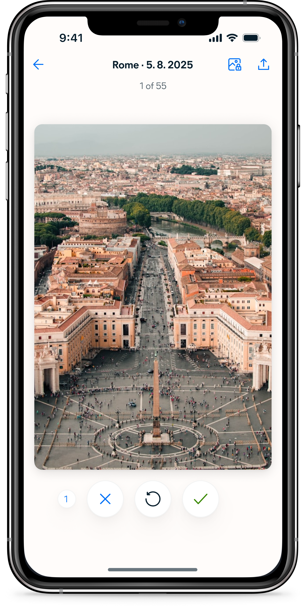
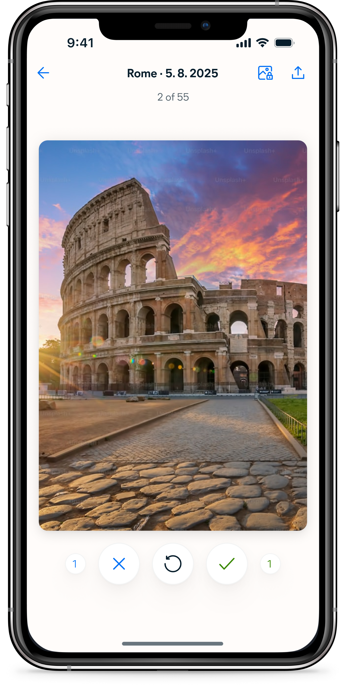
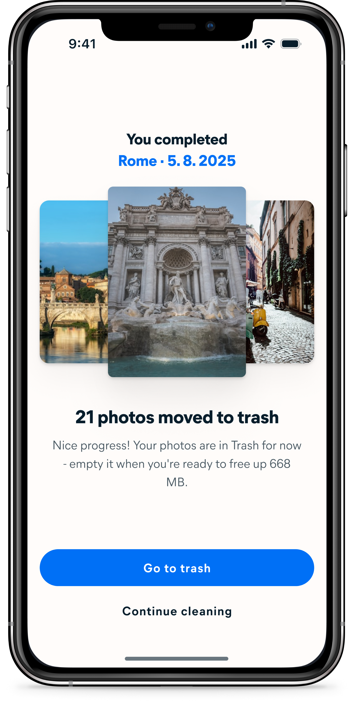
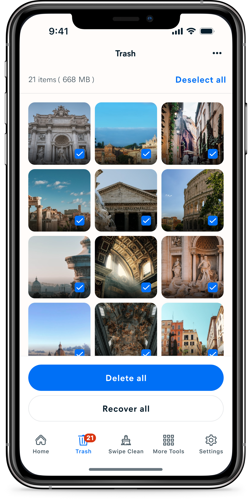
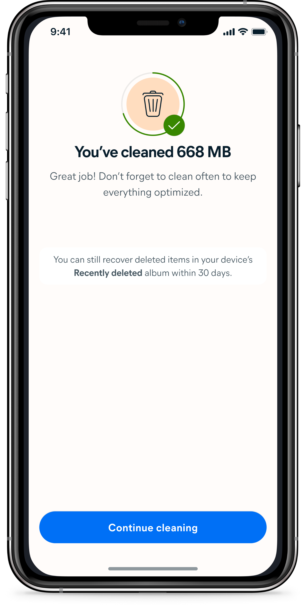
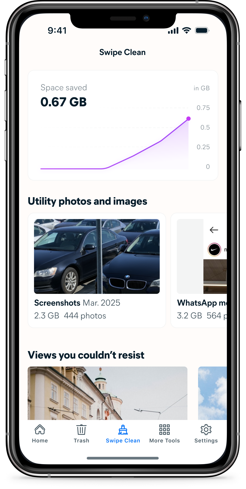

Swipe Clean is a new way to review and clean your photo gallery, one photo at a time, using swipe gestures.
My role
Results

Users came, cleaned once, and never came back, and we kept asking the same question about why.
The retention problem in Avast Cleaner wasn't a mystery. Cleaning is a task people perform reactively, when storage pressure forces their hand. Without that pressure, there's no reason to return. Our research made the emotional dimension of this plain: users who didn't manage their photos regularly described feeling overwhelmed, guilty, and avoidant about it.
They knew their gallery was a mess, felt ashamed of it, and dealt with the feeling by buying more cloud storage rather than actually cleaning. The challenge we kept coming back to was whether cleaning could become something users actually wanted to do — not a chore triggered by a full phone, but something they'd reach for on their own.
The grid wasn't overwhelming because users had too many photos. It was overwhelming because the photos had no meaning in that form.
Our existing cleaning interface showed photos as a grid of small thumbnails organized by month — which could contain anywhere from a handful to several thousand images. At thumbnail size, making a decision about any individual photo is nearly impossible. There's no context, no narrative, no way to orient yourself within the mass of images. Users would open it, feel immediately lost, and close it again.
Swiping one photo at a time would solve part of the problem, but not the underlying one. To make cleaning feel manageable, we first needed to give the gallery structure that users could actually navigate.

We organised the entire gallery into categories users already recognised, then broke each one into sets small enough to finish in a single session.
The categorization system was the core design work of the project. I defined eight categories — Utility photos, Moments, Trips, Holidays, Events, People, Pets, and Months — each with its own logic for detecting and grouping photos using metadata like location, date, time, and content recognition. Within each category, photos are further divided into sets bounded by a strict rule: every set must contain between 10 and 80 photos.
The 80-photo ceiling was a deliberate design constraint. A set that can be swiped in a few minutes delivers immediate, tangible value — the space saved number updates, the set disappears, progress is visible. The category names and section headings were written to feel like reviewing memories, not managing storage. "Retrace your steps" for trips, "Moments" for algorithmically surfaced highlights.

The interaction needed to feel immediately obvious. In testing, users compared it to dating apps within the first few photos.
The swiping interaction had one job: make each decision feel fast and consequence-free. Photos go to Trash, not permanent deletion — nothing is gone until the user decides to empty it. This separation was important because users in research consistently said they wanted control over deletion. The swipe is a sort, not a delete. Making that distinction clear in the interaction itself was the difference between an experience that felt safe to use quickly and one that felt risky.
Feedback was designed to be immediate and legible at a glance. Color, motion, and a running counter all confirm what just happened without requiring the user to stop and read anything. In usability testing, the icon set and counter were described as a no-brainer — users picked up the pattern within the first two photos and kept going without hesitation. Several compared it to a game. That was exactly the response we were looking for.


The end of each set is where the work becomes real.
Deletion lives in Trash rather than at the end of the swipe flow for a simple reason: Avast Cleaner already had a dedicated Trash section where all other deletions happened. Embedding deletion inside Swipe Clean would have split the same action across two different places in the app. Keeping it consistent meant directing users to Trash after swiping.
The end of each set is a moment of payoff — the first place where the value of what the user just did becomes concrete. The number of photos sorted and the space that will be freed are shown before any permanent action is taken, giving users a reason to keep going without pressure to commit immediately.




Cleaning a gallery full of memories should feel like revisiting them — not filing paperwork.
Every interaction in Swipe Clean is designed to work in the same direction: reduce friction, deliver value immediately, and make the next session feel like something worth coming back to. Sets are small enough to finish. Categories are familiar enough to navigate. Copy frames the experience as browsing, not maintenance.
The space saved counter makes progress visible across sessions. Whether the sum of these decisions produces the habitual engagement we set out to build is what the data will confirm — but every design choice was made with that single goal in mind.